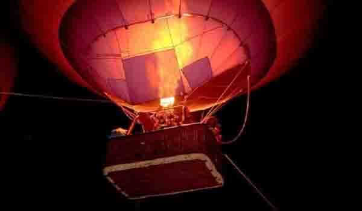
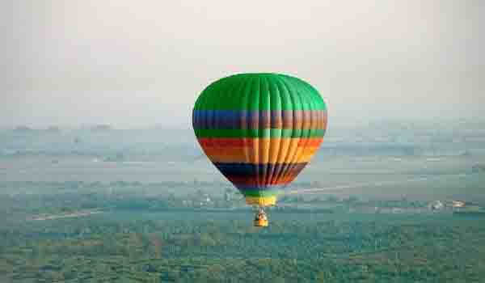

महाराष्ट्र, पर्यटकांसाठी भारतातील लोकप्रिय पर्यटन स्थळ. महाराष्ट्र हे नेत्रदीपक निसर्गरम्य सौंदर्यासह, किनारपट्टी आणि हिरव्यागार विस्ताराने परिपूर्ण आहे, हॉट एअर बलून सफारीचा आनंद घेण्यासाठी योग्य आहे. हवेमध्ये उड्डाण करणे आणि वार्याच्या दिशेने जाणे यापेक्षा जास्त साहसी काहीही असू शकत नाही.
आपण नेहमीपेक्षा वेगळ काहीतरी शोधत असल्यास, लोणावळामध्ये गरम हवेच्या फुग्याचा अनुभव करा. पूर्णपणे नवीन आणि रीफ्रेश करण्यासारखे काहीतरी करण्याचा प्रयत्न करणार्यांमध्ये आता हॉट एअर बलूनिंग ही नवीन क्रेझ आहे.
गरम हवेचा फुगा (हॉट एअर बलून) , लोणावळा :
लोणावळा हे महाराष्ट्रातील सर्वात सुंदर आणि नयनरम्य हिल स्टेशन आहे. लोणावळा मधील हॉट एअर बलून राईड मधून आपल्याला हिरव्यागार शेतात, ढगांनी झाकलेले तलाव, कोसळणारे धबधबे, किल्ल्याचे अवशेष आणि सह्याद्रीच्या खोर्यातील दर्या दिसतात. ही हॉट एअर बलून राइड हे शहरांच्या हालचालींमधून सुटकेसाठी योग्य आहे.
आपल्या प्रियजनांसोबत सुंदर आठवणी बनवित ! हवेत ४००० फूट उंच उडताना तुम्हाला सह्याद्री खोर्याचे, डोंगरावर आणि लोणावळ्यातील लोकॅल्सच्या ३६० डिग्री दृश्यांचा आनंद घेता येतो.
लोणावळ्यातील हॉट एअर बलून सफारी प्रवासाचा आनंद घेण्यासाठी उत्तम वेळ एकतर सूर्योदय होण्यापूर्वी किंवा सूर्यास्ताच्या अगदी आधीचा आहे. सप्टेंबर महिन्यापासून मार्च अखेरपर्यंत रोमांचकारी साहसी उपक्रमांचा आनंद उपभोगण्याचा उत्तम काळ असतो . यावेळी, हवामान कोरडे राहते आणि उष्ण नसते. लोणावळा मधील हॉट एअर बलूनिंग आपल्याला आयुष्यभराचा अनुभव देईल याची खात्री आहे.